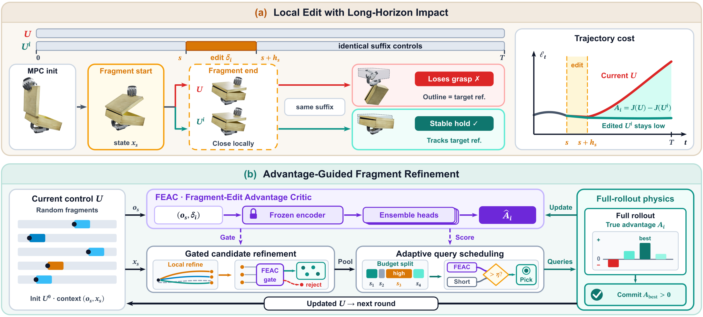
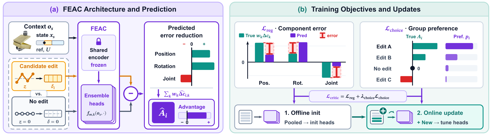
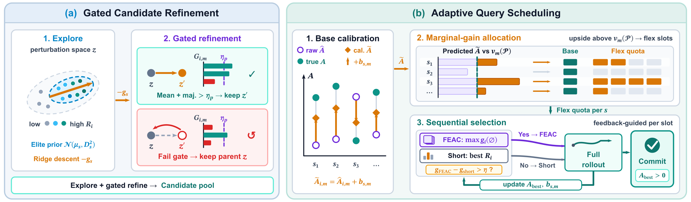

01 · FEAC Critic
Fragment-Edit Advantage Learning
Jointly predicts term-wise full-trajectory cost reductions and pairwise candidate preferences anchored at zero-edit rollouts.
Bridging GPU-parallel short-horizon exploration and full-trajectory physical consistency via learned fragment-edit advantage.
Switch seamlessly between live physics video rollouts and 4-keyframe sequences across bimanual articulation and in-hand grasping.
Filter by benchmark or dexterous embodiment, and toggle between looping MuJoCo rollouts and stroboscopic motion trails.
FragRefine links massive short-horizon fragment sampling with sparse full-trajectory physics verification by learning full-trajectory fragment-edit advantage.
Jointly predicts term-wise full-trajectory cost reductions and pairwise candidate preferences anchored at zero-edit rollouts.
Combines short-horizon local descent directions with parent–child FEAC advantage gating before dispatching expensive full rollouts.
Allocates sparse full-physics queries across fragments via residual calibration, marginal gain estimation, and UCB selection.



@article{fragrefine2026,
title = {FragRefine: Advantage-Guided Parallel Fragment Refinement for Physics-Based Dexterous Retargeting},
author = {Anonymous Authors},
year = {2026},
url = {https://fragrefine.github.io/FragRefine/}
}